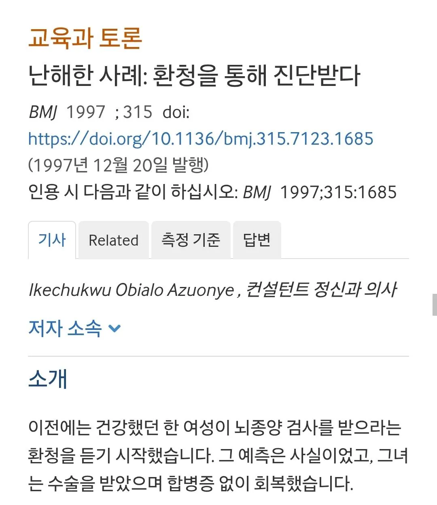
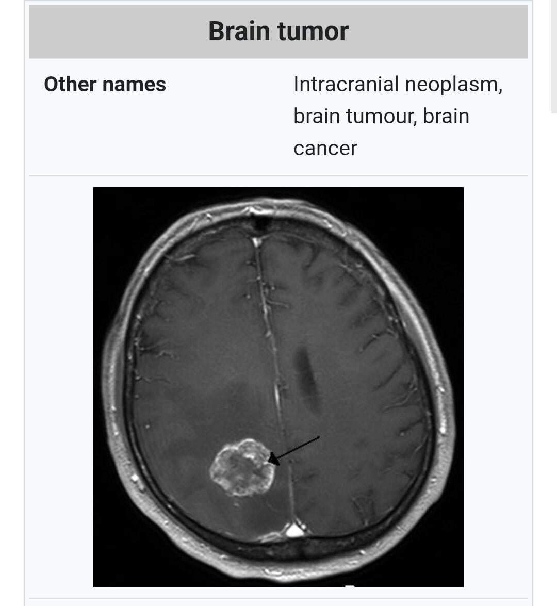
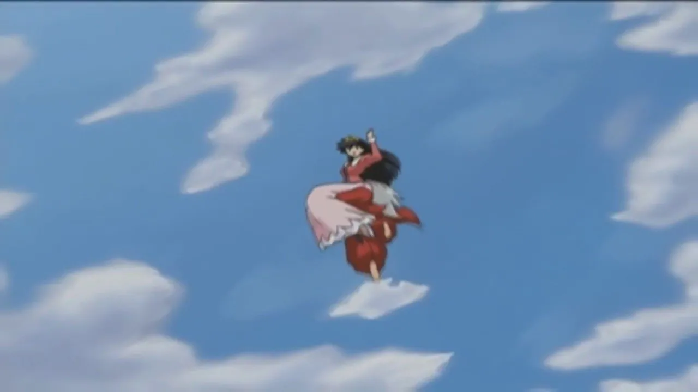
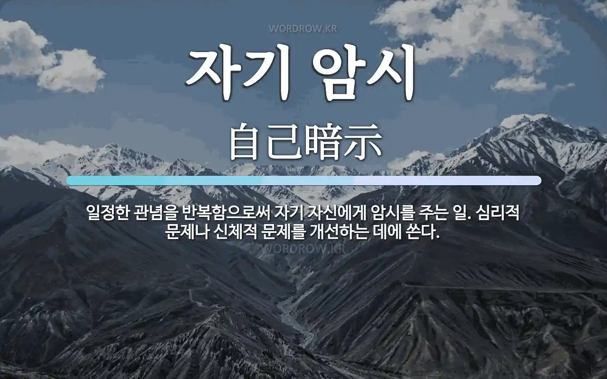

British Medical Journal에 보고된 특이 사례
1940년대 중반 유럽 대륙에서 태어나 1960년대 후반 영국에 정착한 이 여성 환자는 살면서 병원에 간 적이 없을 정도로 튼튼 건강한 사람이었음
그러던 어느날, 1984년 겨울. 집에서 조용히 책을 읽고 있던 환자는 갑자기 머릿속에서
"안녕? 두려워하지말고 잘 들어봐. 우린 동네 아동병원에서 일한 사람들인데 널 도우러 왔어"
라고 말을 거는 목소리를 듣게됨;
환자는 즉시 아 내가 미쳤구나하고 정신과로 달려가 약을 처방 받아 복용했고 2주만에 목소리가 사라졌다고함.
다행히 자기가 미친게 아니라는걸 확인한 환자는 자축성 해외여행을 떠났지만...
"아니 여기서 뭐해? 당장 귀국해서 바로 병원 가라니까!"
라는 환청이 다시 들려오면서 환자에게 런던 대형병원 CT실 주소까지 알려줌;;;
병원에 도착한 환자는
"제 머릿속 환청이 뇌간에 염증이 있다네요 촬영 좀 해주세요"
라고 고집을 부렸고, 병원 측은 신체 징후가 전혀 없어서 검사를 할 수가 없는 입장이라 난감해했음
결국 고민하던 담당의는 일단 환자(?)부터 안심 시키자는 목적으로 촬영 의뢰를 신청해 허가를 받았는데.....

진짜 종양이 있었음...
4월에 시행된 촬영과 5월의 조영 재촬영에서 좌측 후방 전두부 대뇌겸 옆 종괴가 발견됐고
병원 측에서는 1984년 5월 수술을 실시해 약 6.4×3.8센티미터 크기의 종양을 제거했다고함

수술 종료 후 마취가 풀린 환자는
"내 말 맞제? 도움이 되어 기쁘다 ㅇㅇ 나는 간데이"
라는 환청을 들었다고 증언했고, 이후 정신병 약을 끊었음에도 더이상 환청과 환각은 보이지 않았다고함...

당연히 의사가 이 사례를 불가사의한 초능력을 증명한다고 쓴건 아니고
저널 저자는 이 사례를 다음과 같이 해석했음
1. 머릿속의 이상한 느낌이 종양에 대한 공포를 낳음
2. 그 공포가 환청으로 표출
3. 나도 모르는 새 주워들은 뇌종양 정보가 환청으로 재생
4. 만족을 표한 목소리는 위기가 끝났다는 자기 마음의 안도
5. 종양 제거 후 정신과 증상이 완전히 소실된 것은 증상이 병변과 직접 관련된걸 증명
머릿속 종양이 실제로 정신병을 일으킨건 맞지만
어찌저찌하여 그게 실제로 조기 치료에 도움이 됐다는...... 진짜 요상한 사례라고함.
본문 출처 : https://m.dcinside.com/board/singlebungle1472/2592333
저널 출처 : https://www.bmj.com/content/315/7123/1685.full
8 11 16 32 33 41 무조건 오늘 사 8 11 16 32 33 41 무조건 오늘 사 8 11 16 32 33 41 무조건 오늘 사 8 11 16 32 33 41 무조건 오늘 사 8 11 16 32 33 41 무조건 오늘 사 8 11 16 32 33 41 무조건 오늘 사 8 11 16 32 33 41 무조건 오늘 사 8 11 16 32 33 41 무조건 오늘 사 8 11 16 32 33 41 무조건 오늘 사 8 11 16 32 33 41 무조건 오늘 사 8 11 16 32 33 41 무조건 오늘 사 8 11 16 32 33 41 무조건 오늘 사